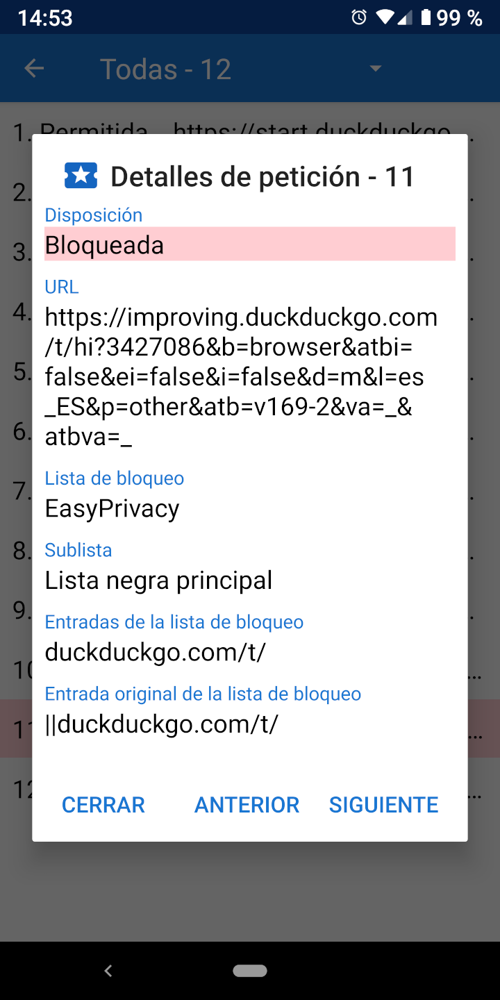

Peticiones de recursos Peticiones de recursos
Peticiones de recursos Peticiones de recursosCuando se carga una URL, normalmente realiza una serie de peticiones de recursos para CCS, JavaScript, imágenes y otros archivos. Los detalles sobre estas solicitudes se pueden ver en la Actividad de peticiones. El cajón de navegación tiene un enlace a la Actividad de peticiones y también muestra cuántas órdenes se bloquearon. Al tocar una solicitud se muestran los detalles de por qué se ha permitido o bloqueado.

Navegador Privado incluye cuatro listas de bloqueo comunes basadas en la sintaxis de Adblock: EasyList, EasyPrivacy, Lista molesta de Fanboy y Lista de bloqueo social de Fanboy. Estas listas de bloqueo son procesadas por Navegador Privado en las siguientes 22 sublistas, que verifican las solicitudes de recursos en el orden listado.
Las listas iniciales se comparan con el principio de la URL. Las listas finales se comparan con el final de la URL. Las listas de dominios sólo se comparan con ciertos dominios. Las listas de terceras partes sólo se aplican si el dominio raíz de la solicitud es diferente del dominio raíz de la URL principal. Las listas de expresiones regulares siguen la sintaxis de las expresiones regulares. Cada elemento de la sublista tiene una o más entradas. En el caso de sublistas de dominio, la solicitud de recurso sólo se compara con el artículo si la primera entrada coincide con el dominio de la URL principal.
Debido a las limitaciones del WebView de Android, y para acelerar el procesamiento de las solicitudes, Navegador Privado implementa una interpretación simplificada de la sintaxis de Adblock. Esto puede conducir a veces a falsos positivos, en los que los recursos se permiten o bloquean de formas que no estaban previstas en la entrada original. Una descripción más detallada de cómo se procesan las entradas de la lista de bloqueo está disponible en stoutner.com.
Navegador Privado tiene 2 listas de bloqueo adicionales,
una llamada Ultra Privacidad que bloquea rastreadores que permite EasyPrivacy,
y otra que bloquea todas las solicitudes de terceras partes. Una solicitud sólo se considera de terceras partes si el dominio base de la solicitud es diferente del dominio base de la URL.
Por ejemplo, si www.website.com carga una imagen de images.website.com,
esto no se bloquea como petición de una tercera parte porque ambos comparten el mismo dominio base de website.com.
El bloqueo de todas las solicitudes de terceras partes aumenta la privacidad, pero esta lista de bloqueo está desactivada por defecto porque rompe un gran número de páginas web.